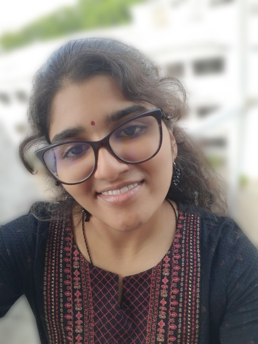

But I Prefer R. Shaanal. I'll talk more about myself
in the following sections.
My Mother, D. Glaramercy.
She is a housewife. She manages everything in our home and
guides our lives with her life experience advice and love.
My Father, A. Rokkash.
He is a regional sales manager in a medical device oriented company named Boston Scientific,
he plays the role of guiding his subordinates and, training doctors and their technicians in utilizing
a medical device to save a patient's life in a more easy and precise way.
My Brother, R. Juan Adrian
He is currently studying his intermediate 1st year. We are four years apart by age.

My Skills
I can code in numerous languages related to software and hardware.
I'm a good problem solver.
I can tolerate a lot of things and I can conjure a lot of patience in me.
I can speak fluent English.
I can read and write in 5 languages and can manage speaking in them. In addition to that I know many basic expressions in 5-6 other languages.
For more clear information, refer to My Resume, accessible from the menu below.